us, the exiled
From a painful ending of coexistence to a hard, tormented path to reconciliation in Istria, Fiume and Dalmatia: The history of the Eastern border told by those who have personally experienced it. Never to forget

«T he exodus is a tragedy of family and social destruction. A family unit is eradicated because their land no longer belongs to them”. These simple words by Adriana, exiled from Zara, explain what the postwar period meant for Italians who lived on the Eastern Adriatic coast much better than the endless political and historic debates on the Eastern border.
Julian-Dalmatians’ history is one of sorrow, of lives uprooted and painfully reestablished elsewhere. For those involuntarily affected by the exodus, it is a recollection of eradication; fear of the Yugoslav police; remembering a father hastily executed; hugging a grandfather who decided to stay and die in his own home; the desperation of “leaving everything behind”, and, finally, the shame for the way they were treated arriving at refugees camps. Seventy years after, eyes are still full of tears. Through the gaze of its direct witnesses, Il Piccolo celebrates its 140 years of existence by retracing this thread of history that the newspaper has contributed to document.
On account of the exodus, an entire society disappeared. Over 300,000 Italians left their land. Istria’s coastal cities were emptied and roots were cut. Then, “silence hit us for 60 years”: oblivion descended upon a sequence of events that makes everyone uneasy, kept alive by refugees’ associations and exploited too many times. Replaced now, after a long and difficult process, by reconciliation among Italians, Slovenians and Croatians. Each side has its own recollections yet is willing to reach out to the other. As stated by an individual in one of the recorded videos, because “borders should no longer exist”; someone who understands the value of peaceful coexistence and, by contrast, the horrific face of nationalism and totalitarianism.
A SHIFTING BORDER
The Eastern border was retraced on multiple occasions with the changing geopolitical situation and sovereignties, from the Venetian domination to the Austrian administration, leading to Italy’s annexation and World War II, and ultimately with the ensuing final showdown. The area currently split between Italy, Slovenia and Croatia has lived through national tensions, ideological conflicts and wars that have transformed it into a historic experiment of the 20th century.
A LONG STORY
The crescendo of political and national violence that led to the Julian-Dalmatian exodus can be explained by adopting a long-term perspective that takes us back to the Short Twentieth Century, starting with World War I, continuing with the ascent of Fascism, the invasion of Yugoslavia, Tito’s rise and a peace treaty that decided the fate of the Eastern Adriatic coast. These are historic events that need to be archived, after the pacification efforts carried out within the context of European integration.
 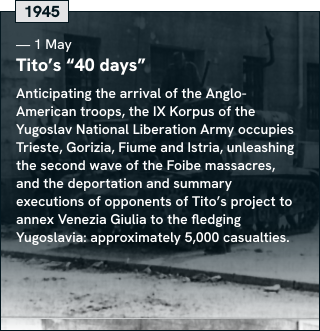
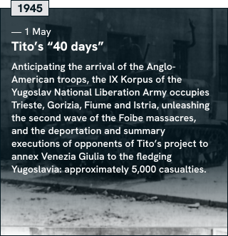
 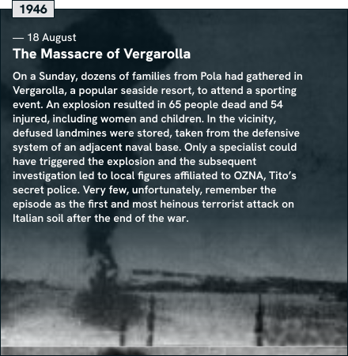
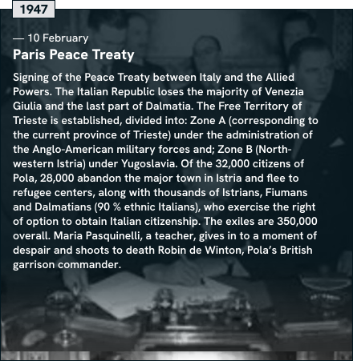
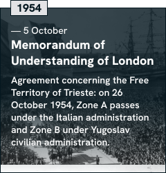
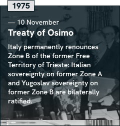
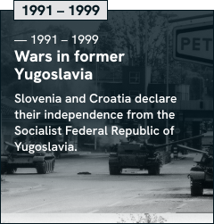
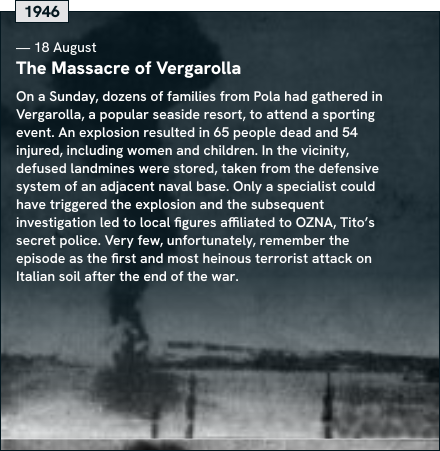
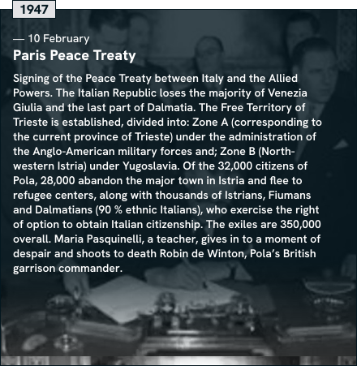
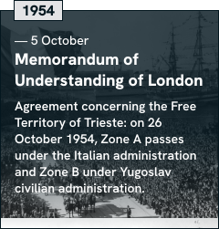
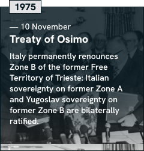
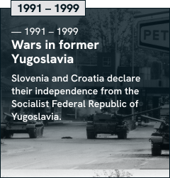


 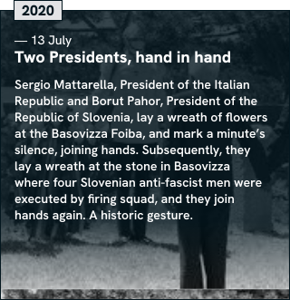
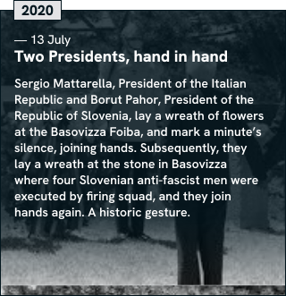
«HOW DID WE GET TO A MASS EXODUS?»
The exodus started, “creeping” at first, after 1943. It acquired “mass proportions” after 1945, which resulted in Pola’s abandonment in 1947. Giuseppe de Vergottini, president of the Associations of Exiles from Istria, Fiume and Dalmatia, and Emeritus Professor of Constitutional Law, explains the events and remembers how we reached such a dramatic page of history.


THROUGH THE EYES OF THE WITNESSES
To leave or to stay. Each Istrian family was tormented by the dilemma. The memory is still vivid in those who were children at the time, as well as the pain that does not go away. The fear of the military and of the new regime. A family member arrested and never seen again. The heinous killing of Norma Cossetto. Pressure increased, and most Italians abandoned their homes, leaving for an uncertain future. Roots were cut: “I never had the courage to set foot in my home again”.
A LONG EXODUS
A steady flow of Italians departing from the Eastern Adriatic coast continued for 15 years. The first to leave were Zara’s citizens, after the Allies’ bombings in 1943-1944. Right after, it was Istria and Fiume’s turn, starting with Pola’s evacuation in February 1947. Then, the B Zone residents: a departure started in 1953, increased after the signing of the Memorandum of understanding of London that awarded the last strip of Istria to Yugoslavia, and continued until the end of the 1950’s.
«WE WERE ALL CRYING»
«Look at this beautiful sea, who knows when we can see it again”. Those who left remember a painful separation, parents incapable of soothing their children, a life in poverty, trying to maintain dignity, in a refugee camp. Memories are similar, yet different, but wounds are the same, shared by those who had convinced themselves that it was “impossible to stay” and were looking at their homes and friends one last time, before stepping “into the unknown”.
A GRAVEYARD OF OBJECTS
To this day, Trieste’s Old Harbour stores in one of its warehouses the strongest visual testimony of what the exodus meant to refugees. It was discovered by many citizens of Trieste, thanks to Simone Cristicchi’s theatrical performance, Magazzino 18 (Warehouse 18). Heaps of chairs, wardrobes, photographs, notebooks, kitchenware, and other small objects: silent remnants of the journey to Italy, abandoned by those who could not reclaim them once having reached their home country.
Those who had decided to leave had to take everything they could in the shortest amount of time and put it on wagons and ships bound for Trieste, and from there into the unknown. Those were the lucky ones, because those who chose to leave during the night could only fill their backpacks with a change of clothes and a few beloved objects. Household goods were piled up in the Old Harbour and what was unclaimed remain there to this day.
Objects were first accommodated in the halls of Magazzino 22, and subsequently moved to Magazzino 18, where they remained for decades. The efforts of Istituto regionale per la cultura istriano-fiumano-dalmata (Regional institute for the Istrian, Fiuman, Dalmatian culture) and Simone Cristicchi’s performance preserved them and brought them back to light: today, those household effects are a permanent exhibition in Magazzino 26, transformed from objects of individual memories into a collective heritage.
Walking through the facility, you discover an array of items: wardrobes with the owner’s name written on the back with a piece of chalk; family pictures; children’s notebooks; work tools; a fishing net. These are modest possessions, fossils of a lost ordinary life, owned by impoverished people who could not retain what they had shipped and were not permitted to transport their belongings to a refugee camp.


THE HUMILIATION OF REFUGEE CAMPS
Accommodating the exiles was not easy for Italy, a country on its knees. Those who could not find a way to support themselves were hosted in refugee camps for years, in some cases. The Italian peninsula is dotted with similar structures, sometimes converted from former concentration camps. Life in the camp was “demeaning and dramatic “: families crammed in cubicles with no privacy or toilet, structures so precarious that in Padriciano a little girl froze to death during the harsh winter of 1956.
«It was below zero inside the cubicle, and one night my sister got so cold… we called an ambulance, but they could not do anything. Marinella had frozen to death”. Fiore, from Grisignana, offers the most dramatic testimony on life at the refugee camp in Padriciano, in Trieste: one of the 109 created since 1947 to accommodate Julian-Dalmatian exiles, who were mostly not self-sufficient. In order to make more spaces available, the Government converted barracks, hospitals, monasteries, disused factories and even former concentration camps, like Risiera di Sabba (San Sabba Rice Mill) or Fossoli.
For the most part, exiles went through Trieste and were quickly “fanned out” (this is the term used by authorities), with no chance to express a preference: they had to adapt to availability. What they were presented with was unseemly: the cubicles were a few square meters, partitioned by sheets or wooden panels. In 1963, 8,500 people remained in the centers that were still open. The last one closed in 1975.
«It was a dramatic time and I still hold it within”. Memories tell stories of precarious hygienic conditions, the humiliation of having one’s fingerprints taken, the sensation of being punished for the fascist war. Integration was not easy because exiles were isolated: citizens saw them as people receiving subsidies and threatening competitors looking for a job. “We were exiles, they did not want us. The stigma remained”.

.jpg)


 1.jpg)
 veduta.jpg)


 profughi giuliano dalmati ai primi lavori della terra dopo insediamento Campo Profughi.jpg)


REDEMPTION
Actresses, athletes, intellectuals, singers, fashion designers, chefs. From an initial status as refugees, they were able to transform into a symbol of redemption for a dispersed population. Sergio Endrigo’s voice, the charms and talent of Laura Antonelli, Nino Benvenuti’s punches, Mario Andretti’s speed, Fulvio Tomizza and Enzo Bettiza’s written works, Ottavio Missoni’s creations, Lidia Bastianich’s culinary art: these are the talents that Julian-Dalmatians were able to share with the world.
PASS ON ONE OF THE FOLLOWING FACES TO READ THE STORY
 Mario Andretti
Mario Andretti
 Laura Antonelli
Laura Antonelli
 Lidia Bastianich
Lidia Bastianich
 Nino Benvenuti
Nino Benvenuti
 Enzo Bettiza
Enzo Bettiza
 Sergio Endrigo
Sergio Endrigo
 Ottavio Missoni
Ottavio Missoni
 Abdon Pamich
Abdon Pamich
 Agostino Straulino
Agostino Straulino
 Giorgio Luxardo
Giorgio Luxardo
 Fulvio Tomizza
Fulvio Tomizza
THE FUTURE, AT LAST
A young student explains, “memory not only entails a recollection of how events unfolded, but also returns a dignity to those who lived and were personally affected by this terrible tragedy”. Today, memory and historical reconstruction can peacefully coexist, even more so after a new page was opened by the Italian and Slovenian Presidents (Sergio Mattarella and Borut Pahor), who joined hands in the symbolic locations of the violence perpetrated in Trieste by Nazi fascists and Communists.
To arrive at this point, it was first necessary to open a dialogue in Italy: a path traced by Gianfranco Fini and Luciano Violante in 1998, that led - six years after - to establishing the “Giorno del Ricordo” (Day of Remembrance). Its goal was to finally ensure that the troubled history of the Eastern border was known to the whole Nation. Following those threads digitally is essential in order to communicate with youth, who, perhaps for the first time, can be acquainted with an unburdened narration, that can finally be consigned to history without ignoring the lives of ordinary people, who were mostly bystanders or victims of history.
The postwar period did not only bring deep wounds. Since the 1960s, the border between Italy and Slovenia continued to separate two worlds but was the most accessible border established along the Iron Curtain. Some exiles could not even think to return and visit their homeland, but others reestablished a link to Istria, which is, to this day, a wonderfully varied place for languages and identities. The fall of Communism and the European integration are doing the rest, after a long journey of mutual understanding that is up to youth to make irreversible.